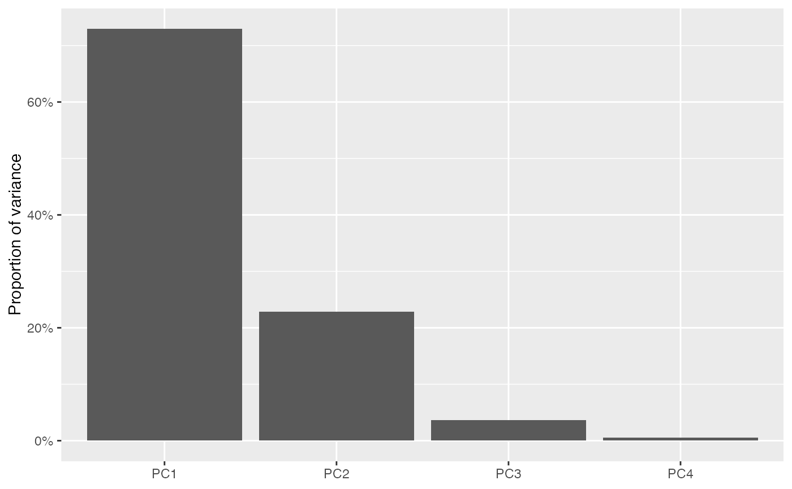

Tidiers for 'tbl_ord' objects
tidiers.RdThese functions return tibbles that summarize
an object of class 'tbl_ord'. tidy() output contains one row per
artificial coordinate and glance() output contains one row for the whole
ordination.
Arguments
- x, model
An object of class 'tbl_ord'.
- ...
Additional arguments allowed by generics; currently ignored.
- data
Passed to generic methods; currently ignored.
- .matrix
A character string matching one of several indicators for one or both matrices in a matrix decomposition used for ordination. The standard values are
"rows","cols", and"dims"(for both).- elements
Character; which elements of each factor for which to render graphical elements. One of
"all"(the default),"active", or"supplementary", with partial matching.
Details
Three generics popularized by the ggplot2 and broom packages make use of the augmentation methods:
The
generics::tidy()method summarizes information about model components, which here are the artificial coordinates created by ordinations. The output can be passed toggplot2::ggplot()to generate scree plots.The
generics::glance()method reports information about the entire model, here always treated as one of a broader class of ordination models.The
ggplot2::fortify()method augments and collapses row and/or column data, depending on.matrixand.supplement, into a single tibble, in preparation forggplot2::ggplot(). Its output resembles that ofgenerics::augment(), though rows in the output may correspond to rows, columns, or both of the original data. If.matrixis passed"rows","cols", or"dims"(for both), thenfortify()returns a tibble whose fields are obtained, in order, viaget_*(),augmentation_*(), andannotation_*().
The tibble is assigned a "coordinates" attribute whose value is obtained
via get_coord(). This facilitates some downstream functionality that relies
on more than those coordinates used as position aesthetics in a biplot, in
particular stat_spantree().
See also
augmentation methods that must interface with tidiers.
Examples
# illustrative ordination: PCA of iris data
iris_pca <- ordinate(iris, seq(4L), ~ prcomp(., center = TRUE, scale. = TRUE))
# use `tidy()` to summarize distribution of inertia
tidy(iris_pca)
#> # A tibble: 4 × 4
#> .name .sdev .inertia .prop_var
#> <fct> <dbl> <dbl> <dbl>
#> 1 PC1 1.71 435. 0.730
#> 2 PC2 0.956 136. 0.229
#> 3 PC3 0.383 21.9 0.0367
#> 4 PC4 0.144 3.09 0.00518
# this facilitates scree plots
tidy(iris_pca) %>%
ggplot(aes(x = .name, y = .inertia)) +
geom_col() +
labs(x = "Latent dimension", y = "Inertia")

tidy(iris_pca) %>%
ggplot(aes(x = .name, y = .prop_var)) +
geom_col() +
scale_y_continuous(labels = scales::percent) +
labs(x = NULL, y = "Proportion of variance")
 # use `fortify()` to prepare either matrix factor for `ggplot()`
fortify(iris_pca, .matrix = "cases")
#> # A tibble: 150 × 7
#> PC1 PC2 PC3 PC4 Species .matrix .supplement
#> <dbl> <dbl> <dbl> <dbl> <fct> <chr> <lgl>
#> 1 -2.26 -0.478 0.127 0.0241 setosa rows NA
#> 2 -2.07 0.672 0.234 0.103 setosa rows NA
#> 3 -2.36 0.341 -0.0441 0.0283 setosa rows NA
#> 4 -2.29 0.595 -0.0910 -0.0657 setosa rows NA
#> 5 -2.38 -0.645 -0.0157 -0.0358 setosa rows NA
#> 6 -2.07 -1.48 -0.0269 0.00659 setosa rows NA
#> 7 -2.44 -0.0475 -0.334 -0.0367 setosa rows NA
#> 8 -2.23 -0.222 0.0884 -0.0245 setosa rows NA
#> 9 -2.33 1.11 -0.145 -0.0268 setosa rows NA
#> 10 -2.18 0.467 0.253 -0.0398 setosa rows NA
#> # … with 140 more rows
fortify(iris_pca, .matrix = "variables")
#> # A tibble: 4 × 9
#> PC1 PC2 PC3 PC4 .name .center .scale .matrix .supplement
#> <dbl> <dbl> <dbl> <dbl> <chr> <dbl> <dbl> <chr> <lgl>
#> 1 0.521 -0.377 0.720 0.261 Sepal.Length 5.84 0.828 cols NA
#> 2 -0.269 -0.923 -0.244 -0.124 Sepal.Width 3.06 0.436 cols NA
#> 3 0.580 -0.0245 -0.142 -0.801 Petal.Length 3.76 1.77 cols NA
#> 4 0.565 -0.0669 -0.634 0.524 Petal.Width 1.20 0.762 cols NA
# ... or to prepare both for `ggbiplot()`
fortify(iris_pca)
#> # A tibble: 154 × 10
#> PC1 PC2 PC3 PC4 Species .matrix .supplement .name .center
#> <dbl> <dbl> <dbl> <dbl> <fct> <chr> <lgl> <chr> <dbl>
#> 1 -2.26 -0.478 0.127 0.0241 setosa rows NA NA NA
#> 2 -2.07 0.672 0.234 0.103 setosa rows NA NA NA
#> 3 -2.36 0.341 -0.0441 0.0283 setosa rows NA NA NA
#> 4 -2.29 0.595 -0.0910 -0.0657 setosa rows NA NA NA
#> 5 -2.38 -0.645 -0.0157 -0.0358 setosa rows NA NA NA
#> 6 -2.07 -1.48 -0.0269 0.00659 setosa rows NA NA NA
#> 7 -2.44 -0.0475 -0.334 -0.0367 setosa rows NA NA NA
#> 8 -2.23 -0.222 0.0884 -0.0245 setosa rows NA NA NA
#> 9 -2.33 1.11 -0.145 -0.0268 setosa rows NA NA NA
#> 10 -2.18 0.467 0.253 -0.0398 setosa rows NA NA NA
#> # … with 144 more rows, and 1 more variable: .scale <dbl>
# use `glance()` to summarize the model as an ordination
glance(iris_pca)
#> # A tibble: 2 × 7
#> rank n.row n.col inertia prop.var.1 prop.var.2 class
#> <int> <int> <int> <dbl> <dbl> <dbl> <chr>
#> 1 150 150 4 596 0.730 0.229 prcomp
#> 2 4 150 4 596 0.730 0.229 prcomp
# this enables comparisons to other models
rbind(
glance(ordinate(subset(iris, Species == "setosa"), seq(4L), prcomp)),
glance(ordinate(subset(iris, Species == "versicolor"), seq(4L), prcomp)),
glance(ordinate(subset(iris, Species == "virginica"), seq(4L), prcomp))
)
#> # A tibble: 6 × 7
#> rank n.row n.col inertia prop.var.1 prop.var.2 class
#> <int> <int> <int> <dbl> <dbl> <dbl> <chr>
#> 1 50 50 4 15.2 0.765 0.119 prcomp
#> 2 4 50 4 15.2 0.765 0.119 prcomp
#> 3 50 50 4 30.6 0.781 0.116 prcomp
#> 4 4 50 4 30.6 0.781 0.116 prcomp
#> 5 50 50 4 43.5 0.783 0.120 prcomp
#> 6 4 50 4 43.5 0.783 0.120 prcomp
# use `fortify()` to prepare either matrix factor for `ggplot()`
fortify(iris_pca, .matrix = "cases")
#> # A tibble: 150 × 7
#> PC1 PC2 PC3 PC4 Species .matrix .supplement
#> <dbl> <dbl> <dbl> <dbl> <fct> <chr> <lgl>
#> 1 -2.26 -0.478 0.127 0.0241 setosa rows NA
#> 2 -2.07 0.672 0.234 0.103 setosa rows NA
#> 3 -2.36 0.341 -0.0441 0.0283 setosa rows NA
#> 4 -2.29 0.595 -0.0910 -0.0657 setosa rows NA
#> 5 -2.38 -0.645 -0.0157 -0.0358 setosa rows NA
#> 6 -2.07 -1.48 -0.0269 0.00659 setosa rows NA
#> 7 -2.44 -0.0475 -0.334 -0.0367 setosa rows NA
#> 8 -2.23 -0.222 0.0884 -0.0245 setosa rows NA
#> 9 -2.33 1.11 -0.145 -0.0268 setosa rows NA
#> 10 -2.18 0.467 0.253 -0.0398 setosa rows NA
#> # … with 140 more rows
fortify(iris_pca, .matrix = "variables")
#> # A tibble: 4 × 9
#> PC1 PC2 PC3 PC4 .name .center .scale .matrix .supplement
#> <dbl> <dbl> <dbl> <dbl> <chr> <dbl> <dbl> <chr> <lgl>
#> 1 0.521 -0.377 0.720 0.261 Sepal.Length 5.84 0.828 cols NA
#> 2 -0.269 -0.923 -0.244 -0.124 Sepal.Width 3.06 0.436 cols NA
#> 3 0.580 -0.0245 -0.142 -0.801 Petal.Length 3.76 1.77 cols NA
#> 4 0.565 -0.0669 -0.634 0.524 Petal.Width 1.20 0.762 cols NA
# ... or to prepare both for `ggbiplot()`
fortify(iris_pca)
#> # A tibble: 154 × 10
#> PC1 PC2 PC3 PC4 Species .matrix .supplement .name .center
#> <dbl> <dbl> <dbl> <dbl> <fct> <chr> <lgl> <chr> <dbl>
#> 1 -2.26 -0.478 0.127 0.0241 setosa rows NA NA NA
#> 2 -2.07 0.672 0.234 0.103 setosa rows NA NA NA
#> 3 -2.36 0.341 -0.0441 0.0283 setosa rows NA NA NA
#> 4 -2.29 0.595 -0.0910 -0.0657 setosa rows NA NA NA
#> 5 -2.38 -0.645 -0.0157 -0.0358 setosa rows NA NA NA
#> 6 -2.07 -1.48 -0.0269 0.00659 setosa rows NA NA NA
#> 7 -2.44 -0.0475 -0.334 -0.0367 setosa rows NA NA NA
#> 8 -2.23 -0.222 0.0884 -0.0245 setosa rows NA NA NA
#> 9 -2.33 1.11 -0.145 -0.0268 setosa rows NA NA NA
#> 10 -2.18 0.467 0.253 -0.0398 setosa rows NA NA NA
#> # … with 144 more rows, and 1 more variable: .scale <dbl>
# use `glance()` to summarize the model as an ordination
glance(iris_pca)
#> # A tibble: 2 × 7
#> rank n.row n.col inertia prop.var.1 prop.var.2 class
#> <int> <int> <int> <dbl> <dbl> <dbl> <chr>
#> 1 150 150 4 596 0.730 0.229 prcomp
#> 2 4 150 4 596 0.730 0.229 prcomp
# this enables comparisons to other models
rbind(
glance(ordinate(subset(iris, Species == "setosa"), seq(4L), prcomp)),
glance(ordinate(subset(iris, Species == "versicolor"), seq(4L), prcomp)),
glance(ordinate(subset(iris, Species == "virginica"), seq(4L), prcomp))
)
#> # A tibble: 6 × 7
#> rank n.row n.col inertia prop.var.1 prop.var.2 class
#> <int> <int> <int> <dbl> <dbl> <dbl> <chr>
#> 1 50 50 4 15.2 0.765 0.119 prcomp
#> 2 4 50 4 15.2 0.765 0.119 prcomp
#> 3 50 50 4 30.6 0.781 0.116 prcomp
#> 4 4 50 4 30.6 0.781 0.116 prcomp
#> 5 50 50 4 43.5 0.783 0.120 prcomp
#> 6 4 50 4 43.5 0.783 0.120 prcomp